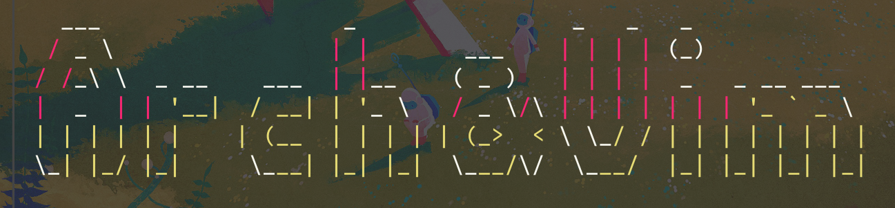
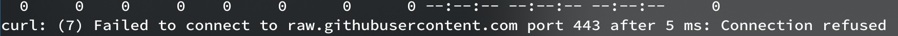

这篇文章将介绍vim在archlinux中的配置，它包含了无gui环境无任何插件的简单配置，以及稍微复杂但不失轻便的带有插件的配置。

archlinux中vim的配置
基础配置
如果你是在一个没有桌面的环境下想有个良好的vim体验，只需简单两步：
- 拉下我的代码,curl是linux下net-tools包里的,arch下
sudo pacman -S net-tools即可安装.-o参数后为拉下来的网页保存为的文件名,下面代码是将我寄存于github上的vim配置文件下下来并保存到temp.vim这个文件中,至于为什么不直接保存到~/.vimrc下,因为我没试过，and此时此刻懒得试。
|
|
当然如果你是在中国，又恰巧忘记给终端配置代理，那你可能会遇到

只需简单的
|
|
- 然后把这个
temp.vim文件拷贝到你的个人根目录的.vimrc
|
|
然后可以把temp.vim删掉了
下面介绍一下这套基础配置带来的一些关键功能:
- 相对行号 这个在可以比较直观的显示你目前键入位置，同时这个相对行号在复制多行代码时也比较有用，自己肉眼看有时候会数错
- 语法高亮 默认情况下在tty中貌似不开的，得手动开
- 智能搜索 就是你输入全小写的，则他会匹配大小写都有的，但你输入一个大写字符，它就会变得大小写敏感
- 配置了一些常用快捷键 首先把配置为空格键
| 快捷键 | 功能 |
|---|---|
<leader> e |
打开vim自带的文件树 |
<leader> nh |
:nohl快速取消高亮 |
<leader> q |
不保存退出文件(因为人类的手指真的很不适合连按q和！) |
<leader> rn |
*Ncgn,这个很体现vim的牛皮之处，*选中当前单词的所有匹配项，并将光标移到下一个匹配项，N则反向跳转到上一个匹配项，也就是你一开始按*的位置，然后cgn改变这个单词，然后下面按.重复上述操作就可以执行让一个操作，也就是改变下一个匹配的单词为上一个你改成的单词,说人话就是匹配修改相同单词变量，按.修改下一个，不解释自行体会 |
<leader> m |
写了个无聊的函数用于控制是否允许鼠标操作，应该是当时老误触写的，后来用发现kde有个打字时自动禁用触摸板的设置，就没怎么用过 |
- 还有一些小功能，比如窗口调整大小，用到这地步自己看看代码也就明白了，不解释。
高级配置
等有空写写,比如13月32号
|
|
|
|